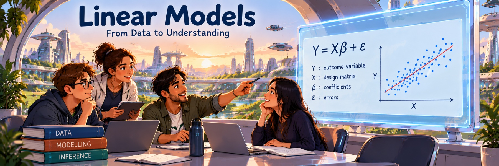

Linear Models: learning path
Choose a chapter and work through its steps in order. Each step links to the online course notes. Your progress is remembered in this browser.

Choose a chapter and work through its steps in order. Each step links to the online course notes. Your progress is remembered in this browser.